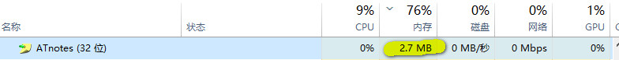
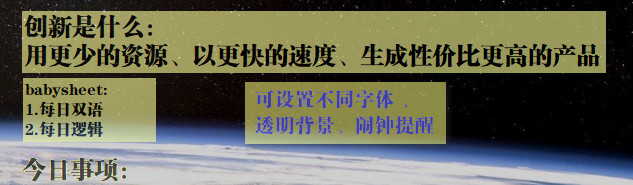
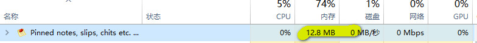
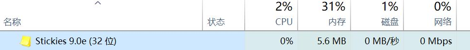

苦苦寻找ATnotes的替代品(win10桌面便签工具)
Contents
不要说微软自家的sticky notes，就这么几个小小功能的软件，就占内存50M+，不好用，启动慢：
运行内存情况：

个人用过感觉体验很好的便签工具：ATnotes(可惜停更了)
免费，仅仅902K，运行内存只有2.7M，有提醒功能、丰富的快捷键、搜索功能、风格设置等，很强大。
Win10仍然能用。但是win10升级到最新版本后，不能输入中文了。原因未知。
运行内存：只有2.7MB

看上去是这样子：

替代品之一：PNotes
功能设置看上非常多，但似乎多数用不到。但是没有提醒功能。

替代品之二：Stickies
小巧，内存占用小。有提醒功能。

Author Joyeah
LastMod 2019-11-28